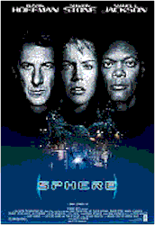
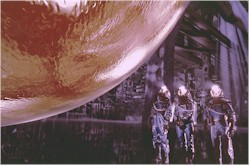
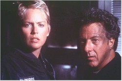

Contents | Features | Reviews | Books | Archives | Store |
 |
|
| Movie Credits | Buy It! |
Sphere
Review by Carrie
Gorringe
Posted 13 February 1998
|  | Directed by Barry Levinson Starring
Dustin Hoffman, Sharon Stone, Screenplay by Kurt Wimmer and Paul Attanasio, |
"What happens if Jerry gets mad?" Since the questioner, Dr. Norman Goodman (Hoffman) is under one thousand feet of water at the time he poses this dilemma to his co-scientists, and all are in a sanctuary which is at high risk for either imploding or exploding, depending upon any given time of day, this is not a good question to be asking. Goodman, Dr. Beth Halperin (Stone), Dr. Harry Adams (Jackson) and Dr. Ted Fielding (Schreiber) were all brought to their current dilemma by the discovery of a downed spaceship in several yards of coral. Since the rate of growth for coral is fairly slow, there is enough evidence to suggest that this spaceship may have crash-landed in the seventeenth century. This intriguing prospect is enough for the U.S. Government to call in Goodman and company on the strength of a report that Goodman had written on the subject of alien encounters a decade or so earlier. Unfortunately, as Goodman is forced to confess, the entire report was based upon mere speculation and not scientific proof; he wrote it to make mortgage payments, not history. The issue of truth-in-writing is irrelevant to mission leader Harold Barnes (Coyote), who is determined to get the scientists to the bottom of the ocean and of the situation.
While exploring the spaceship, Goodman and Adams come across a large translucent sphere which seems to reflect only what it wishes to, and it takes a liking to the two scientists, allowing Harry inside to view its contents. Soon, all is not well, as Harry goes native with a vengeance; he begins crooning tunes from South Pacific, refusing to eat fish and begins reading a version of Jules Verne’s 20,000 Leagues Under the Sea. Normally, the latter occurrence wouldn’t be an issue – except for the text that stops at page eighty-seven, and the fact that only Harry can discern whatever message is on those blank pages. Furthermore, whenever the underwater sanctuary is attacked, Harry is usually asleep. Eventually, the team makes contact with an alien entity (the aforementioned "Jerry") who goes from being happy to issuing threats to kill everyone on board whenever the conversation turns to their imminent departure from the underwater underworld. Yet, as the bodies pile up, Harry seems remarkably unaffected by the goings-on and suspicion arises that he is, perhaps, suffering from more than a mild case of the psychological bends.
 The film itself has
some problems with too much nitrous oxide in its system, what with its woozy approach to
narrative inconsistency, despite the best intentions of Levinson and his screenwriters.
It’s mystifying to understand just how this situation could have evolved, since the
technical and stylistic details in the direction and scripting appear to be of very high
quality, with very few (if any) false notes in the dialogue, framing and editing – at
least, as far as the first ninety minutes or so of Sphere is concerned. Generally
speaking, Sphere has enough suspenseful moments to make you pop up in your seat
quite regularly; despite reports suggesting that the film was shut down at some point
during its filming, a shutdown is not sufficient to throw a film off course, if its
central premise has enough richness to sustain the momentum on screen. Unfortunately, it
would appear that, in the process of funding the special effects, someone on the
production line-item-vetoed the script’s proofreading budget , because the errors
contained therein suggest that the problems with the script were easily traceable to
Crichton’s source, and the carelessness of the screenwriters in not catching said
errors from the start..
The film itself has
some problems with too much nitrous oxide in its system, what with its woozy approach to
narrative inconsistency, despite the best intentions of Levinson and his screenwriters.
It’s mystifying to understand just how this situation could have evolved, since the
technical and stylistic details in the direction and scripting appear to be of very high
quality, with very few (if any) false notes in the dialogue, framing and editing – at
least, as far as the first ninety minutes or so of Sphere is concerned. Generally
speaking, Sphere has enough suspenseful moments to make you pop up in your seat
quite regularly; despite reports suggesting that the film was shut down at some point
during its filming, a shutdown is not sufficient to throw a film off course, if its
central premise has enough richness to sustain the momentum on screen. Unfortunately, it
would appear that, in the process of funding the special effects, someone on the
production line-item-vetoed the script’s proofreading budget , because the errors
contained therein suggest that the problems with the script were easily traceable to
Crichton’s source, and the carelessness of the screenwriters in not catching said
errors from the start..
Whatever your opinion concerning the overall quality of Crichton’s writing, his journeyman’s approach to plot and character construction makes him an understandable darling for screenwriters. He provides expository information at exactly the time that his audience needs it. Sometimes there’s just a little too much information, but at least the audience can get some learnin’ with their thrills. There exists, however, one nagging problem with all of Crichton’s work that allows it to just miss the threshold of complete entertainment: as the ending draws near, everything can be summed up (and usually is) in the most banal of didactic phrases, usually something along the lines of "Don’t play God" or "Remember what’s really important in life." Now, while such a dissipation of thematic richness in favor of empty pretentiousness isn’t automatically harmful to the work in question (especially where there are sufficient distractions to conceal this particular weakness) it actually has disastrous consequences here, because several promising sub-plots, such as the premise of a nearly 300-year-old space journey, are discarded with a degree of arbitrariness and indifference to the end product that can only be described as shocking; under the circumstances the viewer is left suffering from a bad case of narratus interruptus . The central theme of Sphere – taken verbatim from the film – is, "We’re not ready." This line could have been lifted from a forty-year-old Jules Feiffer cartoon about the reluctance to take on additional responsibility at any age. Unlike Pfeiffer’s protagonist, who deserts his family to run screaming into the woods, the audience for Sphere is left in place, stunned; nerves stretched taut by nearly two hours of skillfully-rendered suspense and the whole exercise, in the end, feels like a cheat. Perhaps the real model for Sphere is not Pfeiffer but songwriters Leiber and Stoller. If we had only have heard Peggy Lee crooning Is That All There Is? under the final credits, Sphere’s chief deficiency could not have been more apparent.
As in all too many films of late, the responsibility falls solely upon the actors in this ensemble to fashion haute-couture acting from the shoddiness of their source material and, to their mutual credit, the well-oiled machine of performances on board almost makes the entire enterprise worthwhile. Hoffman, Jackson and Schreiber have such incredible camaraderie on screen that you can dismiss much of the narrative idiocy, and, more remarkably, do so throughout the majority of the film. It has been rumored that Sharon Stone was somewhat displeased with the nature of her role in a "buddy" film, but it’s difficult to see how she is damaged in any way by her position in the film. Granted, she has been shorn of the usual glamorous trappings that make up her general cinematic persona, but maybe she should do this sort of thing more often, because her input into the vulnerable Beth provides her with the best showcase for her acting talents since her film-saving performance in Casino. Even Queen Latifah and Marga Gomez bring as much personality as they can to their brief and thankless roles as nearly-nameless and faceless crew members. If it weren’t for these saving graces, this film would have been beyond the help of any decompression chamber, but it’s definitely time for Crichton, Levinson, et al. to book a session or two therein for themselves.
Contents | Features | Reviews | Books | Archives | Store
Copyright © 1999 by Nitrate Productions, Inc. All Rights Reserved.